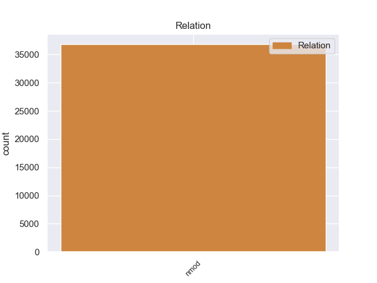
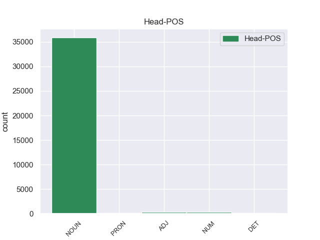
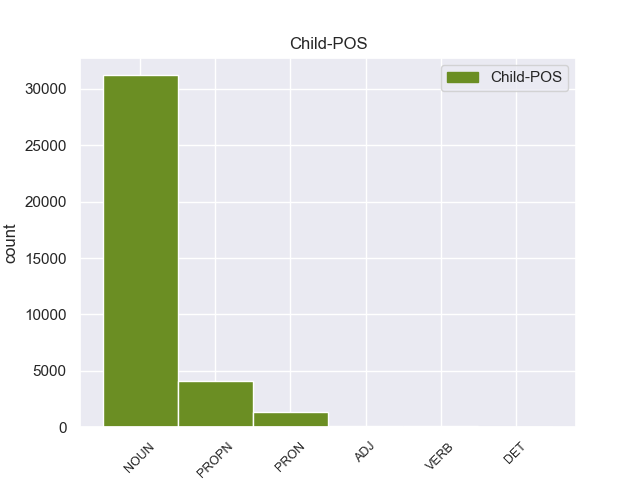

Distribution of features within this leaf



Agreement Rules sorted by frequency.
- When the dependent token is the nominal modifier(nmod) of the head token, and the head token is NOUN
1 - _ _ _ _ 0 _ _ _
2 Здравствуй _ _ _ _ 0 _ _ _
3 , _ _ _ _ 0 _ _ _
4 - _ _ _ _ 0 _ _ _
5 сказал _ _ _ _ 0 _ _ _
6 он _ _ _ _ 0 _ _ _
7 , _ _ _ _ 0 _ _ _
8 обернувшись _ _ _ _ 0 _ _ _
9 и _ _ _ _ 0 _ _ _
10 доброжелательно _ _ _ _ 0 _ _ _
11 глядя _ _ _ _ 0 _ _ _
12 на _ _ _ _ 0 _ _ _
13 меня _ _ _ _ 0 _ _ _
14 большими _ _ _ _ 0 _ _ _
15 коричневыми _ _ _ _ 0 _ _ _
16 глазами _ _ _ _ 0 _ _ _
17 из-за _ _ _ _ 0 _ _ _
18 круглых _ _ _ _ 0 _ _ _
19 плоских _ _ _ _ 0 _ _ _
20 стекол стекло NOUN _ Animacy=Inan|Case=Gen|Gender=Neut|Number=Plur 0 _ _ _
21 оконной _ _ _ _ 0 _ _ _
22 прозрачности прозрачность NOUN _ Animacy=Inan|Case=Gen|Gender=Fem|Number=Sing 20 nmod 20:nmod SpaceAfter=No
23 . _ _ _ _ 0 _ _ _
1 Тем _ _ _ _ 0 _ _ _
2 самым _ _ _ _ 0 _ _ _
3 нарушалось _ _ _ _ 0 _ _ _
4 гармоничное _ _ _ _ 0 _ _ _
5 развитие _ _ _ _ 0 _ _ _
6 двуязычия _ _ _ _ 0 _ _ _
7 как _ _ _ _ 0 _ _ _
8 одного один NUM _ Case=Gen|Gender=Masc 0 _ _ _
9 из _ _ _ _ 0 _ _ _
10 важных _ _ _ _ 0 _ _ _
11 принципов принцип NOUN _ Animacy=Inan|Case=Gen|Gender=Masc|Number=Plur 8 nmod 8:nmod _
12 национально _ _ _ _ 0 _ _ _
13 - _ _ _ _ 0 _ _ _
14 языковой _ _ _ _ 0 _ _ _
15 политики _ _ _ _ 0 _ _ _
16 . _ _ _ _ 0 _ _ _
1 Хищник _ _ _ _ 0 _ _ _
2 , _ _ _ _ 0 _ _ _
3 настигший _ _ _ _ 0 _ _ _
4 зеленую _ _ _ _ 0 _ _ _
5 птицу _ _ _ _ 0 _ _ _
6 с _ _ _ _ 0 _ _ _
7 красной _ _ _ _ 0 _ _ _
8 головой _ _ _ _ 0 _ _ _
9 , _ _ _ _ 0 _ _ _
10 не _ _ _ _ 0 _ _ _
11 оставил _ _ _ _ 0 _ _ _
12 от _ _ _ _ 0 _ _ _
13 нее _ _ _ _ 0 _ _ _
14 ни _ _ _ _ 0 _ _ _
15 косточки _ _ _ _ 0 _ _ _
16 , _ _ _ _ 0 _ _ _
17 ни _ _ _ _ 0 _ _ _
18 лоскутка _ _ _ _ 0 _ _ _
19 плоти _ _ _ _ 0 _ _ _
20 , _ _ _ _ 0 _ _ _
21 лишь _ _ _ _ 0 _ _ _
22 весь _ _ _ _ 0 _ _ _
23 ее _ _ _ _ 0 _ _ _
24 непригодный непригодный ADJ _ Animacy=Inan|Case=Acc|Degree=Pos|Gender=Masc|Number=Sing 0 _ _ _
25 в _ _ _ _ 0 _ _ _
26 пищу пища NOUN _ Animacy=Inan|Case=Acc|Gender=Fem|Number=Sing 24 nmod 24:nmod _
27 наряд _ _ _ _ 0 _ _ _
28 содрал _ _ _ _ 0 _ _ _
29 он _ _ _ _ 0 _ _ _
30 с _ _ _ _ 0 _ _ _
31 нее _ _ _ _ 0 _ _ _
32 и _ _ _ _ 0 _ _ _
33 сложил _ _ _ _ 0 _ _ _
34 возле _ _ _ _ 0 _ _ _
35 пня _ _ _ _ 0 _ _ _
36 , _ _ _ _ 0 _ _ _
37 а _ _ _ _ 0 _ _ _
38 быть _ _ _ _ 0 _ _ _
39 может _ _ _ _ 0 _ _ _
40 , _ _ _ _ 0 _ _ _
41 это _ _ _ _ 0 _ _ _
42 ветром _ _ _ _ 0 _ _ _
43 смело _ _ _ _ 0 _ _ _
44 к _ _ _ _ 0 _ _ _
45 пню _ _ _ _ 0 _ _ _
46 набросанные _ _ _ _ 0 _ _ _
47 на _ _ _ _ 0 _ _ _
48 лиственную _ _ _ _ 0 _ _ _
49 прель _ _ _ _ 0 _ _ _
50 перья _ _ _ _ 0 _ _ _
51 … _ _ _ _ 0 _ _ _
1 Вот _ _ _ _ 0 _ _ _
2 почему _ _ _ _ 0 _ _ _
3 , _ _ _ _ 0 _ _ _
4 если _ _ _ _ 0 _ _ _
5 в _ _ _ _ 0 _ _ _
6 сернокислом _ _ _ _ 0 _ _ _
7 растворе _ _ _ _ 0 _ _ _
8 содержится _ _ _ _ 0 _ _ _
9 много _ _ _ _ 0 _ _ _
10 разных _ _ _ _ 0 _ _ _
11 ионов _ _ _ _ 0 _ _ _
12 , _ _ _ _ 0 _ _ _
13 скажем _ _ _ _ 0 _ _ _
14 молибдена _ _ _ _ 0 _ _ _
15 , _ _ _ _ 0 _ _ _
16 никеля _ _ _ _ 0 _ _ _
17 , _ _ _ _ 0 _ _ _
18 меди _ _ _ _ 0 _ _ _
19 , _ _ _ _ 0 _ _ _
20 калия _ _ _ _ 0 _ _ _
21 , _ _ _ _ 0 _ _ _
22 рения _ _ _ _ 0 _ _ _
23 , _ _ _ _ 0 _ _ _
24 а _ _ _ _ 0 _ _ _
25 извлечь _ _ _ _ 0 _ _ _
26 нужно _ _ _ _ 0 _ _ _
27 рений _ _ _ _ 0 _ _ _
28 , _ _ _ _ 0 _ _ _
29 которого который PRON _ Case=Gen 0 _ _ _
30 меньше _ _ _ _ 0 _ _ _
31 всего все PRON _ Animacy=Inan|Case=Gen|Gender=Neut|Number=Sing 29 nmod 29:nmod SpaceAfter=No
32 , _ _ _ _ 0 _ _ _
33 то _ _ _ _ 0 _ _ _
34 эффективно _ _ _ _ 0 _ _ _
35 справиться _ _ _ _ 0 _ _ _
36 с _ _ _ _ 0 _ _ _
37 этим _ _ _ _ 0 _ _ _
38 могут _ _ _ _ 0 _ _ _
39 жидкие _ _ _ _ 0 _ _ _
40 мембраны _ _ _ _ 0 _ _ _
41 , _ _ _ _ 0 _ _ _
42 которые _ _ _ _ 0 _ _ _
43 легко _ _ _ _ 0 _ _ _
44 создавать _ _ _ _ 0 _ _ _
45 , _ _ _ _ 0 _ _ _
46 вводя _ _ _ _ 0 _ _ _
47 различные _ _ _ _ 0 _ _ _
48 избирательные _ _ _ _ 0 _ _ _
49 реагенты _ _ _ _ 0 _ _ _
50 . _ _ _ _ 0 _ _ _
1 Важный _ _ _ _ 0 _ _ _
2 для _ _ _ _ 0 _ _ _
3 каждого каждый DET _ Case=Gen|Gender=Masc|Number=Sing 0 _ _ _
4 из _ _ _ _ 0 _ _ _
5 нас мы PRON _ Case=Gen|Number=Plur|Person=1 3 nmod 3:nmod _
6 и _ _ _ _ 0 _ _ _
7 для _ _ _ _ 0 _ _ _
8 всего _ _ _ _ 0 _ _ _
9 общества _ _ _ _ 0 _ _ _
10 . _ _ _ _ 0 _ _ _
Disagree Examples:
1 Однако _ _ _ _ 0 _ _ _
2 стиль стиль NOUN _ Animacy=Inan|Case=Nom|Gender=Masc|Number=Sing 0 _ _ _
3 работы работа NOUN _ Animacy=Inan|Case=Gen|Gender=Fem|Number=Sing 2 nmod 2:nmod _
4 Семена _ _ _ _ 0 _ _ _
5 Еремеевича _ _ _ _ 0 _ _ _
6 заключался _ _ _ _ 0 _ _ _
7 в _ _ _ _ 0 _ _ _
8 том _ _ _ _ 0 _ _ _
9 , _ _ _ _ 0 _ _ _
10 чтобы _ _ _ _ 0 _ _ _
11 принимать _ _ _ _ 0 _ _ _
12 всех _ _ _ _ 0 _ _ _
13 желающих _ _ _ _ 0 _ _ _
14 и _ _ _ _ 0 _ _ _
15 лично _ _ _ _ 0 _ _ _
16 вникать _ _ _ _ 0 _ _ _
17 в _ _ _ _ 0 _ _ _
18 дело _ _ _ _ 0 _ _ _
19 . _ _ _ _ 0 _ _ _
1 У _ _ _ _ 0 _ _ _
2 двери _ _ _ _ 0 _ _ _
3 стоял _ _ _ _ 0 _ _ _
4 стол стол NOUN _ Animacy=Inan|Case=Nom|Gender=Masc|Number=Sing 0 _ _ _
5 секретарши секретарша NOUN _ Animacy=Anim|Case=Gen|Gender=Fem|Number=Sing 4 nmod 4:nmod SpaceAfter=No
6 , _ _ _ _ 0 _ _ _
7 на _ _ _ _ 0 _ _ _
8 столе _ _ _ _ 0 _ _ _
9 - _ _ _ _ 0 _ _ _
10 пишущая _ _ _ _ 0 _ _ _
11 машинка _ _ _ _ 0 _ _ _
12 с _ _ _ _ 0 _ _ _
13 широкой _ _ _ _ 0 _ _ _
14 кареткой _ _ _ _ 0 _ _ _
15 . _ _ _ _ 0 _ _ _
1 У _ _ _ _ 0 _ _ _
2 двери _ _ _ _ 0 _ _ _
3 стоял _ _ _ _ 0 _ _ _
4 стол _ _ _ _ 0 _ _ _
5 секретарши _ _ _ _ 0 _ _ _
6 , _ _ _ _ 0 _ _ _
7 на _ _ _ _ 0 _ _ _
8 столе _ _ _ _ 0 _ _ _
9 - _ _ _ _ 0 _ _ _
10 пишущая _ _ _ _ 0 _ _ _
11 машинка машинка NOUN _ Animacy=Inan|Case=Nom|Gender=Fem|Number=Sing 0 _ _ _
12 с _ _ _ _ 0 _ _ _
13 широкой _ _ _ _ 0 _ _ _
14 кареткой каретка NOUN _ Animacy=Inan|Case=Ins|Gender=Fem|Number=Sing 11 nmod 11:nmod SpaceAfter=No
15 . _ _ _ _ 0 _ _ _
1 В _ _ _ _ 0 _ _ _
2 глубине _ _ _ _ 0 _ _ _
3 стоял _ _ _ _ 0 _ _ _
4 широкий _ _ _ _ 0 _ _ _
5 письменный _ _ _ _ 0 _ _ _
6 стол стол NOUN _ Animacy=Inan|Case=Nom|Gender=Masc|Number=Sing 0 _ _ _
7 с _ _ _ _ 0 _ _ _
8 бронзовыми _ _ _ _ 0 _ _ _
9 чернильницами чернильница NOUN _ Animacy=Inan|Case=Ins|Gender=Fem|Number=Plur 6 nmod 6:nmod _
10 и _ _ _ _ 0 _ _ _
11 перед _ _ _ _ 0 _ _ _
12 ним _ _ _ _ 0 _ _ _
13 два _ _ _ _ 0 _ _ _
14 кожаных _ _ _ _ 0 _ _ _
15 кресла _ _ _ _ 0 _ _ _
16 . _ _ _ _ 0 _ _ _
1 Молодая _ _ _ _ 0 _ _ _
2 женщина женщина NOUN _ Animacy=Anim|Case=Nom|Gender=Fem|Number=Sing 0 _ _ _
3 в _ _ _ _ 0 _ _ _
4 кокетливой _ _ _ _ 0 _ _ _
5 шляпке шляпка NOUN _ Animacy=Inan|Case=Loc|Gender=Fem|Number=Sing 2 nmod 2:nmod _
6 прошла _ _ _ _ 0 _ _ _
7 в _ _ _ _ 0 _ _ _
8 кабинет _ _ _ _ 0 _ _ _
9 . _ _ _ _ 0 _ _ _